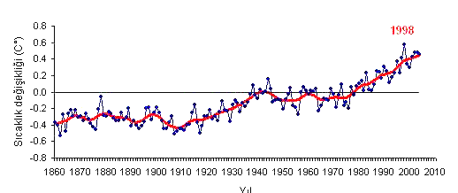

KÜRESEL ISINMA TARİHİ
Günümüz toplunu etkileyen ve ilgisini son 20 yıl içinde çekmeye başlayan ve sürekli artan sera etkisi ve küresel ısınma, yaklaşık 100 yıldır bilinmekte ve bilim adamları tarafından incelenmektedir. Atmosferdeki CO2 birikiminin değişmesine bağlı olarak, iklimin değişebilirliği ilk kez 1896 yılında Nobel ödülü sahibi İsveçli S. Arrhenius tarafından öngörülmüştür.
Ancak, ilk kez 1979 yılında Dünya Meteoroloji Örgütü (WMO) öncülüğünde “Birinci Dünya İklim Konferansı” düzenlenmiş; fosil yakıtlardan ve CO2 birikiminden kaynaklanan küresel iklim değişikliği vurgulanmıştır. Yapılan ilk ciddi konferans, 5-12 Haziran 1992 tarihindeki Rio Konferansı’dır. Bu konferans sonucunda Rio Deklarasyonu yayımlanmış; Birleşmiş Milletler ve Avrupa Topluluğu ülkelerinin de içinde bulunduğu 184 ülkenin taraf olduğu Birleşmiş Milletler İklim Değişikliği Çerçeve Sözleşmesi 21 Mart 1994 tarihinde yürürlüğe girmiştir.
Bu sözleşmeye göre iki çalışma grubu oluşturulmuştur. Birinci çalışma grubunda ülkelerin CO2 ve öteki sera gazı emisyonlarıyla ilgili yükümlülükler; ikinci çalışma grubunda ise yasal ve kurumsal mekanizmalar ele alınmıştır. Çalışma gruplarının yaptığı araştırmalar sonunda, gelişmiş ülkelerin önceki süreçte atmosfere yaydığı sera gazları dikkate alınmış ve bu ülkelerin emisyonlarında derhal indirim yoluna gitmeleri belirtilmiştir.
Gelişmekte olan ülkelere ise; sanayileşme süreçlerinin devam ettiği vurgulanarak gaz emisyonu indiriminde esneklik sağlanmıştır. Bu tespitlerden yola çıkılarak gelişmekte olan ülkelere tanınan sera gazı salınım esnekliğinin istenilen seviyede tutulabilmesi için gelişmiş ülkelerin, gelişmekte olan ülkelerin sanayileşmesine maddi kaynak ve teknolojik destek sağlamaları gerektiği belirtilmiştir. Birleşmiş Milletler İklim Değişikliği Çerçeve Sözleşmesi’nin en önemli amacı “Atmosferdeki sera gazı birikimlerini iklim sistemi üzerindeki tehlikeli antropojen (insan kaynaklı) etkileri önleyecek bir düzeyde durdurmak” biçiminde tanımlanmıştır. Sonuç olarak, fikir birliği sağlanamamış ve üzerinde tartışılan konular bir sonraki toplantı için ana madde olarak belirlenmiştir. Rio Deklarasyonu sonrasında imzalanan diğer bir önemli belge de 1997 Kyoto Protokolüdür. Bu protokole göre taraf ülkeler insan kaynaklı CO2 ve öteki sera gazı salınımlarını 2008-2012 döneminde 1990 Düzeylerinin En az %5 altına indireceklerdir.
Kyoto Sözleşmesinin Tam Metni
Avrupa Birliği hem üye olarak hem de tek tek üye ülkeler açısından %8′lik azaltma yükümlülüğü almıştır. Protokolde Amerika Birleşik Devletlerinin belirlenmiş salınım azaltma yükümlülüğü %7′dir. Ancak dönemin Amerika Başkan Yardımcısı Al Gore bu yükümlülüğü kabul etmenin mümkün olmadığını ve kendi halkının çıkarları doğrultusunda değiştirmek için elinden geleni yapacağını açıklamıştır.
Uluslararası önlemler daha sonraki süreçte ABD, Buenos Aires’te gerçekleştirilen Taraflar Konferansı’nın (COP-4) sonunda Kyoto Protokolü’nü imzaladığı ancak Çin, Hindistan gibi gelişmekte olan anahtar ülkeler sera gazı salınımlarını sınırlandırma konusunda herhangi bir yükümlülük almadıkça protokole taraf olmayacağını ilan etmiştir. Bilindiği gibi ABD’nin dünya siyasi arenasındaki gücü ekonomik üstünlüğünden ileri gelmektedir. Bu gücün önemli bir kısmını da “petrol tekelleri” dediğimiz Amerikan petrol şirketleri oluşturmaktadır.
ABD’nin insan kaynaklı sera gazı salınımlarını sınırlandırma sürecinde almış olduğu tutum insan hayatı pahasına da olsa, kendi ekonomik çıkarlarından vazgeçmek istemediğinin belirgin bir kanıtıdır. Sonuç olarak, fikir birliği sağlanamamış ve üzerinde tartışılan konular bir sonraki toplantı için ana madde olarak belirlenmiştir. Sonuç olarak taraf ülkelerin anlaşmazlıkları sebebiyle Kyoto Protokolü herhangi bir yaptırım gücü ya da geçerliği olmayan bir metin olarak kalmıştır. Daha sonraki süreçte, küçük bünyeli çeşitli konferanslar yapılmış ancak daha önce alınan kararlar bir türlü hayata geçirilemediğinden Hollanda’da 35 ülkenin katılımıyla 13-24 Kasım 2000 tarihinde Taraflar Konferansı 6 (COP-6) düzenlenmiştir.
La Haye Konferansı olarak bilinen bu toplantının gündemi Kyoto Protokolü’nde alınan kararların hayata geçirilme yolları olmuştur. Bu amaçla konferans başkanlarına bazı görevler ve denetleme yetkileri verilmiştir. Ancak tüm bunlara rağmen protokolün işleyişi tam olarak sağlanamamış ve anlaşmazlıklar bir sonraki toplantıya ertelenmiştir. Görüldüğü gibi Avrupa Birliği ülkeleri, ABD ve daha birçok ülkenin katılımı ile gerçekleştirilen tüm bu konferanslar hiçbir somut adıma dönüşememiştir.
Bu çözümsüzlüğün nedeni; başta ABD olmak üzere bazı gelişmiş ülkelerin “ulusal çıkarlarımız” dedikleri ancak esasen ekonomik temelli olan çıkarlarından vazgeçmek istemeleridir. Yayımlanan ve hatta imzalanan hiçbir protokol “insanlığın çıkarları” adına somut önlemler alamamış sadece siyasi arenadaki metin kalabalığına birkaç yaprak daha eklemiştir.
Ölçümlere göre 1860-1900 yılları arasında, denizde ve karadaki küresel sıcaklık her ikisinde de 0,75 °C yükseldi. 1979'dan beri kara sıcaklığı deniz sıcaklığının iki katı hızla yükseldi(0.13 °C/onyıl karşın 0.25 °C/onyıl). Uydudan yapılan sıcaklık ölçümlerine göre alt troposferdeki sıcaklık 1979'dan beri, her on yıllık dilimde, 0.12 ile 0.22 °C arasında yükselmiştir. Sıcaklıkların, 1850'den önceki 1000 ile 2000 yıllık dönemler boyunca, Orta Çağ Ilıman Dönemi ve Küçük Buz Çağı gibi kısmi dalgalanmalar dışında, nispeten kararlı bir seyir izlediğine inanılmaktadır. NASA'nın hesaplamalarına göre, güvenilir ölçümlerin yapılabildiği 1800'lerden beri 2005 yılı, 1998'i geçerek, en sıcak yıl olmuştur. Dünya Meteoroloji Organizasyonu ve BK İklim Araştırma Biriminin hesaplamalarına göre ise 2005, 1998 yılının ardından hala ikinci sıradadır.
Şubat 2007 tarihli BM Raporu
Konu ile ilgili Birleşmiş Milletler raporu, Fransa'nın başkenti Paris'te açıklanmıştır.[6] Raporda küresel sıcaklık artışının olası etkileri aşağıdaki biçimde özetlenmektedir.
- +2 derece: Su sıkıntısı başlayacak Kuzey Amerika'da kum fırtınaları tarımı yok edecek. Deniz seviyeleri yükselecek. Peru'da 10 milyon kişi su sıkıntısı çekecek. Mercan kayalıkları yok olacak. Gezegendeki canlı türlerinin yüzde 30'u yok olma tehlikesiyle karşı karşıya kalacak.
- + 5 derece: Denizler 5 m. yükselecek Deniz seviyesi ortalaması 70 metre olacak. Dünyanın yiyecek stokları tükenecek.
- + 6 derece: Göçler başlayacak Yüz milyonlarca insan uygun iklim koşullarında yaşamak umuduyla göç yollarına düşecek.